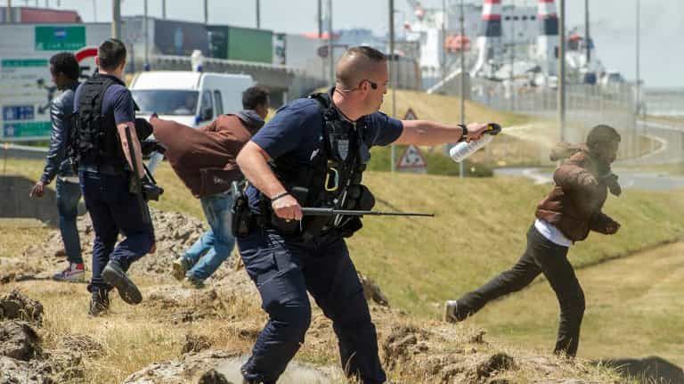

< < < Back
3 Stories The French Media Concealed While They Invented Fictions About ROK – Return Of Kings
It has been six weeks since the ROK meetup outrage, and though the dust has settled, there is much to learn on exactly how the media establishment operates. Since I’m French, I have identified articles written about ROK in the French media, along with their respective authors. If you believe that appearance is ideology, you will not be shocked on how many of these lying journalists look like. While they reported on us, there were three big stories that the failed to broadcast to the public. I’ll first show the reporters, and then the stories.
L’Obs
Article by Agathe Ranc

The title reads “Roosh V, the blogger who wanted to legalise rape… and fears for his safety. (…) “self-proclaimed misogynist and homophobe (…) organises hundreds of pro-rape rallies”

“Yes, Roosh V (…) does think that the absence of consent of a woman is a minor obstacle for the one who wants to take advantage of her”
Le Figaro
Article by Amaury Peyrach/Peyrrachon

“Pro-rape blogger and anti-feminist Roosh V is everyone’s subject of conversation”

20minutes.fr
Article by Philippe Berry

“Legalisation of rape” : How the sexist blogger Roosh V succeeded in making the headlines”

“Worldwide pro-rape meetings” (…) advice like “Never ask permission””
Geopolis/FranceTVinfos
Article by France 2 reporter Jacques Cardoze

“Anti-feminist blogger who writes about rape legalisation cancels his great meetup”

“He proposes to legalise rape then asserts that it is a satire”

The author
France Bleu
Article by Typhaine Morin

“Small group that advocates rape legalisation cancels meetings”

“Roosh V, leader of a pro-rape masculinist organisation, decided to cancel the meetings. The “State Secretary for Women’s Rights” congratulates herself on the matter.”
Les Inrocks
Article by Adélaïde Tenaglia

Roosh V, the “PUA” who wanted to legalise rape, cancels his conferences”

“Making rape legal in the private sphere in order to eradicate it… it was Roosh V’s solution (…) “superiority of the man over the woman, a poor fragile thing that cannot think logically or rationally” (the only sensible thing she says in her article.)
Marie Claire
Article by Mylène Wascowiski (Pascale Boistard, Miniluv henchwoman, jumps in)

“Meetups organised by Roosh V, pro-rape blogger, cancelled in France”

“Those meetings would discuss the creation of a new societal model, based on the domination of the white heterosexual male” *dramatic sound effect* Then she quotes the Secretary of State for Women’s Rights.
This is the “State Secretary for Women’s Rights” (a position that was only occupied when the left was in power in France) that jumped on the band wagon and was in touch with the police to prevent the meetings from happening, not monitor them, in Paris and Nantes:

“Such meetings calling for rape and violence against women were inconceivable” (She was warned by an online petition, not by a police or investigative source) Bottom tweet “For a few days, we’ were in constant communication with Place Beauvau (Ministry of the Interieur’s headquarters) and @paris / @nantesfr (mayors and local police forces) that I thank for their action and vigilance.”

Knowing her type extremely well and my people’s aversion for English, I doubt that she even received or read a translation of Roosh’s article in French, let alone in English. She took the word of someone on Twitter to mobilize the State’s police forces.
Words and profiles seem to follow a similar pattern? Weak, lazy, snarky, bitter, not an ounce of doubt or analysis. Frenchmen of talent and Gallic heroes of the past writhe in pain and shame in their cold grave.
The above are the faces that analyse information for you if you read the papers they work for. I do not have to comment. Their mere appearance explains the level of trust you can give them. This is the peril that my nation finds itself in today. They do not, I repeat, they DO NOT represent the French people, but these are the kind of individuals who are in charge of the information and the decisions about what should be celebrated or vilified.
Exhorting Minitrue and the Thought Police to act against the villains, mere leftists and a handful of mediocre journalists sent the state and the police authorities to apprehend us. These articles are only the tip of the iceberg. Here are news stories that are being concealed or downplayed by the media while they featured our meetups as the top story.
1. Migrants are turning Calais and its region into a 3rd-world slum

Crime becomes rampant wherever they drop their bindle. Almost no mention in the French media of the anti-migrant demonstration of Calais inhabitants in Paris. They came in force recently, to exhort the tepid pudding that we have for President to do something, as they witness their city slowly dying because of the bad reputation the migrants bring to it. Curfew, theft, and exactions are common occurrences in this once-prosperous seaport.
The tourism activity and all the sectors linked to it (recreational, restaurants, accommodation providers) see their business dwindling. The estimated figure is a fall of 40% of all their revenues since last summer, when the Invasion of Europe sold as a refugee crisis was in full swing.

A majority of French people do not want the migrants. Hollande does not care and agreed to welcome 130,000 very soon
While trying to approach the migrants of the “Jungle” in Calais, a Dutch pro-migrant journalist was almost stabbed by those he wanted to interview. Jude Law’s crew was attacked by the migrants as he was about to attention-whore using their “struggle.”
2. A retired general from the Foreign Legion was arrested for showing up at an anti-migrant rally
General Christian Piquemal, 75 years-old, hero of the Legion, was arrested for participating in an anti-migrant rally that the Leftist mayor of Calais tried to forbid. He bled for France and this is how its government repays him: by putting him in immediate custody and treating him like a common horse thief.
Meanwhile, Morrocan and Turkish minors should soon be released after gang raping and torturing a French White girl because “All French girls are whores” (sic) and in the Jungle, the Mighty Jungle, English Anarchists from “No Borders” set fire to migrant shacks and accuse the police. No one has been charged so far. France (its ruling elite, at least) spits in the face of its own sons and holds against its own breast the ungrateful snake that will soon bite her.
3. The government is more preoccupied by fighting thought criminals than hardened felons
French police forces are targeting “vigilante groups,” accused without proof in Corsica or in the mainland rather that non-natives committing crimes that are documented. They advertise the capture of members of “hate groups” while they still have to catch one the main perpetrators of the Paris attacks. The recurrent criminals, drug dealers, and gang rapists of foreign origin that proliferate in the large cities’ housing estates carry on their daily activities without worry.
Pauvre France, si tu voyais tes fils…
All the elements of the cultural decline can be observed in the contemporary French society. But it was only until recently, when the whole conspiracy against our movement took place, that I realized the extent of the problem. We are at a crossroads of our history.
I can say with certainty that we are 4th in the race for total cultural decline behind the podium composed of Sweden (1st), Germany (2nd) and The United (for how long?) Kingdom (3rd). If, we, young men of France do not act and start a wave of awakening to change our sleeping nation, the end is near.
Read More: 11 Myths About French Girls